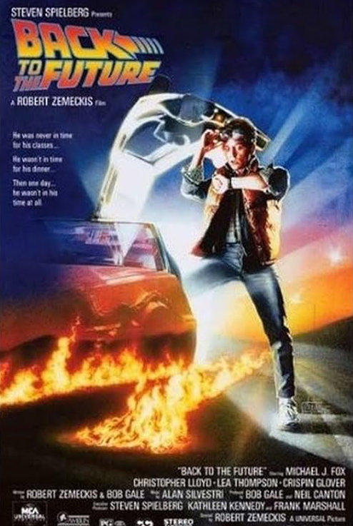
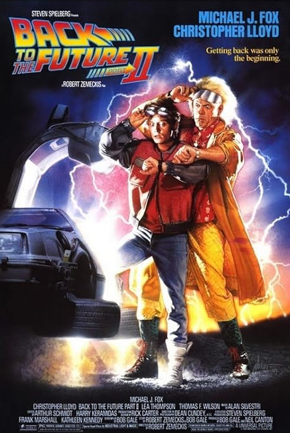
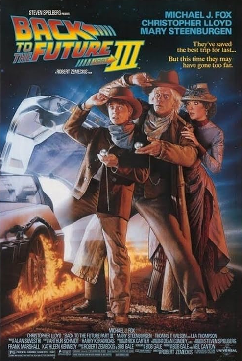

Trama
La trilogia Back to the Future segue Marty McFly e il Emmett Brown, che viaggiano nel tempo con una DeLorean modificata. Dopo un viaggio accidentale nel 1955, Marty deve riparare il suo incontro con i genitori per non compromettere la sua esistenza. Nel corso della serie, i due affrontano numerosi pericoli, tra cui l'infido Biff Tannen, che manipola il tempo per ottenere potere. Ogni viaggio nel passato e nel futuro porta a una riflessione sulle scelte, sul destino e sulle conseguenze delle azioni, con l’obiettivo di ripristinare l'ordine temporale e vivere nel presente con responsabilità.
Personaggi
| Personaggio | Descrizione | Interpretato da |
|---|---|---|
| Marty McFly | Protagonista della serie, un adolescente che viaggia nel tempo | Michael J. Fox |
| Emmett "Doc" Brown | Scienziato eccentrico e inventore della macchina del tempo | Christopher Lloyd |
| Jennifer Parker | Fidanzata di Marty, coinvolta nei viaggi nel tempo nella seconda parte | Claudia Wells (1° film) / Elisabeth Shue (2° e 3° film) |
| George McFly | Padre di Marty, inizialmente timido e insicuro, ma con un grande potenziale | Crispin Glover |
| Lorraine Baines | Madre di Marty, innamorata di George nel passato e protettiva nel presente | Lea Thompson |
| Biff Tannen | Antagonista principale, bullo e prepotente in diverse linee temporali | Thomas F. Wilson |
| Stella Baines | Madre di Lorraine, nonna di Marty nel 1955 | Wendie Jo Sperber |
| Sam Baines | Padre di Lorraine, nonno di Marty nel 1955 | George DiCenzo |
| Dave McFly | Fratello maggiore di Marty | Marc McClure |
| Linda McFly | Sorella maggiore di Marty | Wendie Jo Sperber |
| Maggie McFly | Sorella minore di Marty | Jason Marin (1° film) |
| Clara Clayton | Insegnante e interesse amoroso di Doc nel 1885 | Mary Steenburgen |
La trilogia
Primo film (1985)
Marty McFly, un adolescente degli anni '80, viene accidentalmente trasportato nel 1955 grazie alla macchina del tempo inventata dal suo amico scienziato, il dottor Emmett "Doc" Brown. Durante il viaggio, Marty interferisce con l'incontro tra i suoi genitori, rischiando di cancellare la propria esistenza. Con l'aiuto di Doc, deve fare in modo che i suoi genitori si innamorino e trovare un modo per tornare al futuro, affrontando il bullo Biff Tannen e superando una serie di sfide temporali.
Secondo film (1989)
Dopo aver risolto i problemi del 1955, Marty e Doc viaggiano nel futuro, precisamente nel 2015, per evitare che i figli di Marty si mettano nei guai. Tuttavia, Biff Tannen ruba la macchina del tempo e torna nel 1955 per consegnare a sé stesso un almanacco sportivo, creando una linea temporale alternativa in cui Biff è ricco e potente. Marty e Doc devono tornare al 1955 per distruggere l'almanacco e ripristinare la linea temporale originale.
Secondo film (1990)
Bloccato nel 1955, Marty scopre che Doc è stato trasportato nel 1885, nel Far West. Utilizzando la macchina del tempo, Marty raggiunge Doc per aiutarlo a tornare al futuro. Nel frattempo, Doc si innamora di Clara Clayton, un'insegnante, e deve decidere se rimanere nel passato o tornare al 1985. Marty e Doc affrontano l'antenato di Biff, "Cane Rosso" Tannen, e cercano di riparare la DeLorean per tornare al futuro, in un'avventura piena di colpi di scena e azione.